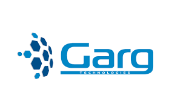

About Company
Since Dec 7, 2017
Our Motto
The company’s motto "Leading the Complete IT Solutions" reflects our dedication towards serving our clients with new concepts and ideas with cheap cost. We believe to provide quality service to our customers by creating goal oriented, good looking, secured, technically excellent, and affordable websites and softwares. At Programic Labs, everything else takes back stage when Client Satisfaction comes into consideration.
Our Services:
- Web Development
- Web Designing
- Network setup